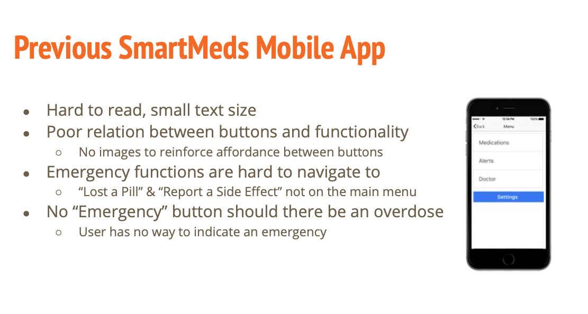

Smartmeds - Smart Medicine Tracking
Smartmeds was a conceptual smart medication dispenser that automatically notifies, orders & dispenses medications for the elderly. It provides quick access to medical information about each medication prescribed to the user & transparent data sharing between doctors & their patients
Link to High Fidelity Prototype:https://creator.ionic.io/share/d8ab37caf703

brief
- Intuitive pill dispenser
- Reminders / Alerts
- Transparent data sharing & communication with doctors & health specialists
- Quick access to medical information
- Important data shared with people who need it
First Steps: Low Fidelity Prototype
First iterations of the smart app were hand drawn wireframes and a common pez dispenser. We wanted to test how elderly users would interact with it then improve the designs accordingly
Next Steps: Product Iteration
We've built an interactive smart app so that we can began initial user testing and receive feedback from users, doctors & medical specialists
High Fidelity Prototype:
After consulting with doctors & medical specialists we arrived to the High Fidelity prototype design of our smart product. Enlarged buttons and a more friendly UI/UX for elderly users to navigate the application
https://creator.ionic.io/share/d8ab37caf703
Findings & Outcomes
We've administered usability testing both online, via the ionic link, & in person. The application performed as intended with the majority of users able to perform a list of important tasks in the app within 5 - 10 minutes